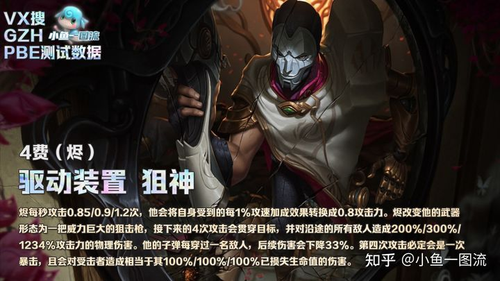
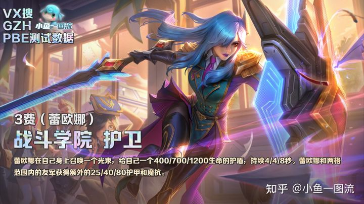
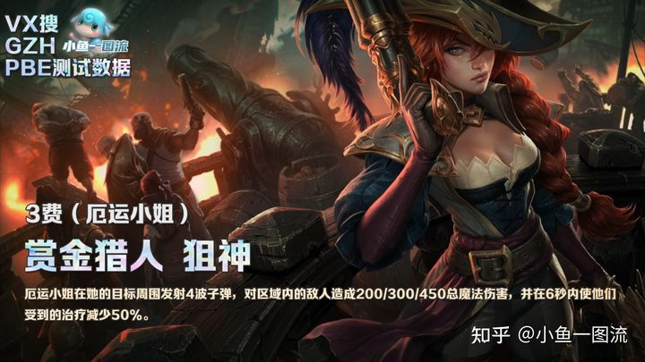
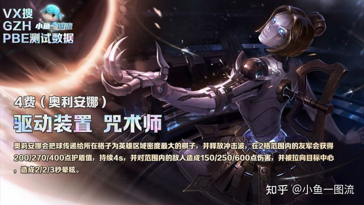

白魔保镖狙（斗鱼|山东棋王奕哥推荐）
海克斯推荐
棋子名称
棋子图标
主要装备
炙热香炉（1级海克斯）破碎的秒表（3级海克斯）狙神之巢（1级海克斯）
狙神之冕（3级海克斯）白魔法之冕（3级海克斯）社交名流之魂（3级海克斯
社交名流之心（1级海克斯）


白魔保镖狙（斗鱼|山东棋王奕哥推荐） |
|||
|---|---|---|---|
海克斯推荐 |
棋子名称 |
棋子图标 |
主要装备 |
炙热香炉（1级海克斯）破碎的秒表（3级海克斯）狙神之巢（1级海克斯） 狙神之冕（3级海克斯）白魔法之冕（3级海克斯）社交名流之魂（3级海克斯 社交名流之心（1级海克斯） |
烬 |  | 必备装备（最后的轻语、巨人的杀手）替代装备（无尽之刃、正义之手、饮血剑） |
| 蕾欧娜 |  | 巨龙之爪、狂徒铠甲、棘刺背心 | |
| 布隆 | |
||
| 厄运小姐 |  | 朔极之刃、大天使之杖、女妖之爪 | |
| 塔里克 | |
||
| 奥莉安娜 |  | ||
| 悠米 | |||
| 迦娜 | |
||
前期过度
开局拿弓，打完小兵后可根据棋子质量走连胜或者连败，前期尽量不D牌。
连败打法3-6拉7人口D到烬，发条以及两星日女后存钱，到4-2拉8人口D光钱。
连胜打法2-3拉4，2-6拉5保连胜，卡50快利息慢升人口4-1拉7D牌，D到一张烬后可拉8人口。